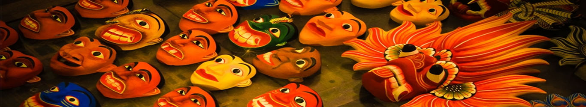

Masks
Masks: Used in ceremonies, festivals, and traditional dance performances, Sri Lankan masks are an essential component of the nation's cultural legacy. These masks are primarily constructed of wood, and the numerous people, animals, and deities they depict are painstakingly carved and painted.
Where to locate masks in Sri Lanka: |
Ambalangoda, a seaside town in the country's southwest known for its long legacy of mask-making, is the ideal spot to find traditional masks. Additionally, you may purchase a variety of masks in stores and marketplaces in major tourist hotspots including Colombo, Galle, and Kandy. |